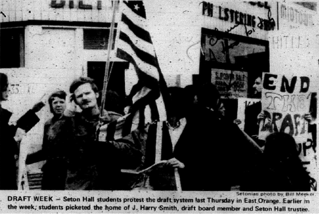
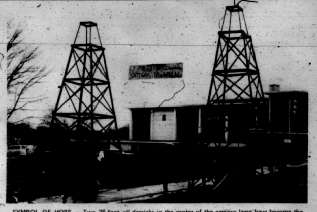
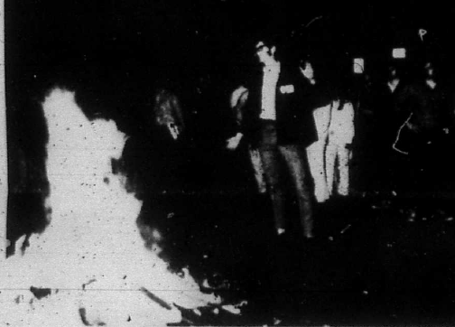
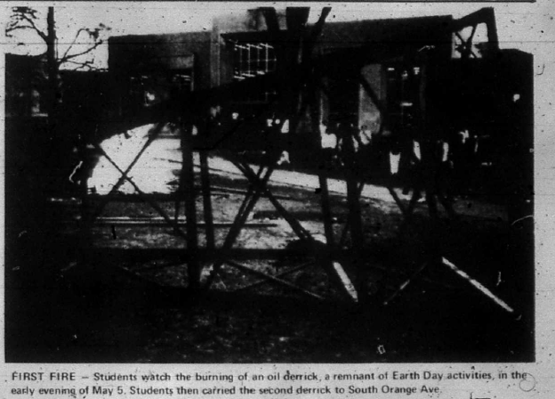
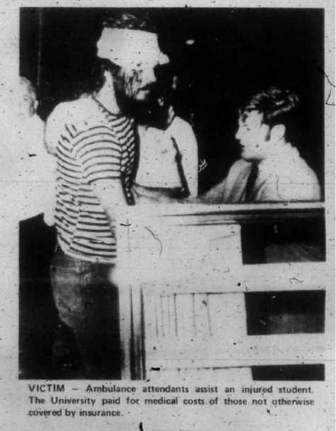
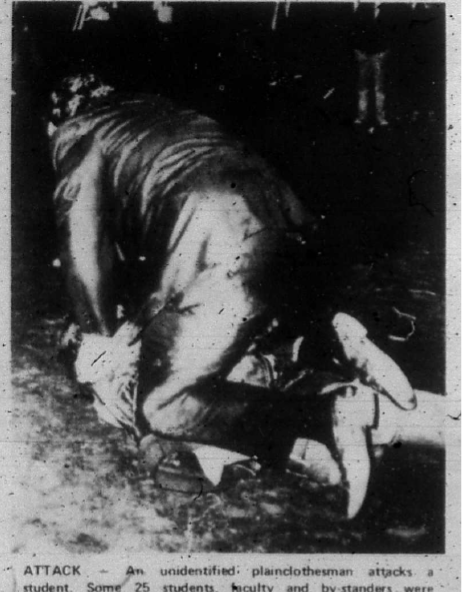

{kind=link}

A group of students protesting the Vietnam War draft outside the house of J. Harry Smith, a member of the local draft board and Seton Hall Trustee, in late March 1970.
All pictures from The Setonian
Return to the Time Machine

A group of students protesting the Vietnam War draft outside the house of J. Harry Smith, a member of the local draft board and Seton Hall Trustee, in late March 1970.

Oil Derricks built by Phi Kappa Theta for Environmental Tech-in on Earth Day, April 22, 1970.

Bill Strasser, President of the Student Government, watches as the second mock Oil Derrick burns on South Orange Ave. The next day, Strasser is quoted as saying, “Seton Hall is a much more radical place today, I would think, than it ever was after last night” (WSOU).

The remains of the first mock Oil Derrick built by Phi Kappa Theta for Earth Day. In the early evening of May 5th, 1970, it was burned on the campus lawn.

Students injured from protests on May 5th, 1970, at Seton Hall University received medical attention from EMTs. The university covered the costs of injured students and faculty resulting from the protest.

Many members of the surrounding communities observed and participated in the protests. Students and Faculty were both injured in the protest by police and bystanders. Some 25 people were identified as injured, including: Jerry Rizzo, Barry Walson, Dr. Frank Sullivan, Gerry Owens, Joey Franel, Bob Ericesto, Dennis O’Keefe, Frank Harrison, Paul Thompson, and Jimmy Callan.
{kind=link}
{kind=link}
{kind=link}
{kind=link}
{kind=link}